Bacon Q Dog

Bacon Q. Dog is a 9yr old labradoodle. He prefers to spend his days lounging among the three different beds/couches that his family has gifted him. He enjoys a walk or two around the neighborhood, as long as he can pretend that he doesn't see any of the other animals to avoid the embarrassment of not wanting to admit he has no wolf-like skills in chasing them.
At night just as the rest of the family is ready to relax, Bacon suddenly wants to release all of his energy. He will place his toys on a mini couch and frantically drag the couch around, giving his toys "a ride." There is also a lot of rolling. Lots and lots of rolling.
Photo Gallery


Likes
- Belly rubs
- Playing tug-of-war
- Sneaking onto the couch
Coco Parrot
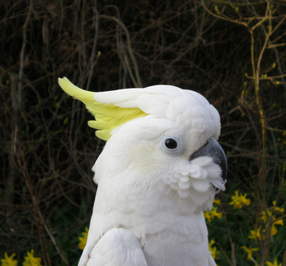Coco, an enchanting and talkative parrot with vibrant, white-colored feathers that make him a true spectacle. Coco is a 4-year-old parrot who adds a burst of color and charm to the household with his playful nature and impressive vocabulary.
During the day, Coco enjoys perching on his favorite branch, serenading the household with a symphony of chirps, whistles, and mimicked sounds. His remarkable ability to imitate voices and noises, from household sounds to songs on the radio, never ceases to amuse everyone.
Photo Gallery
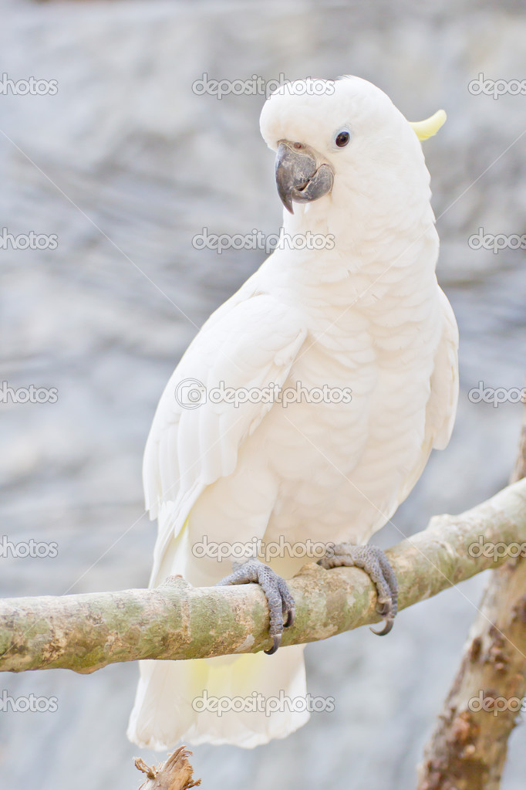 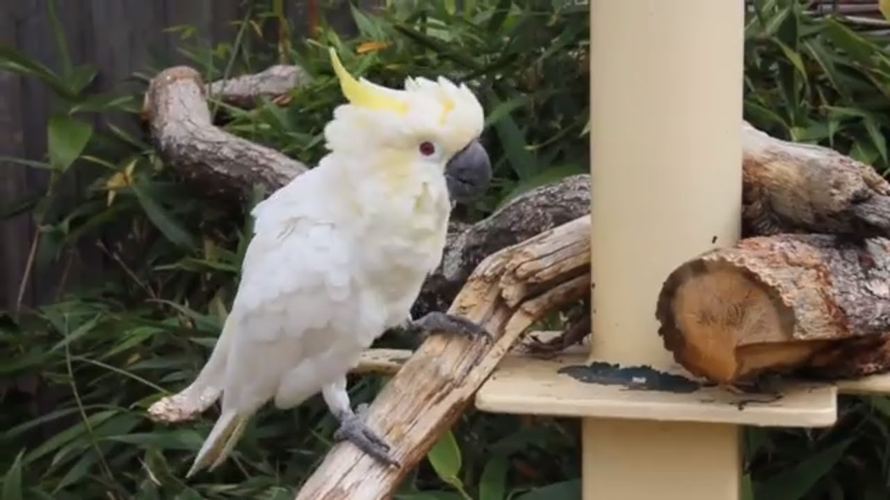 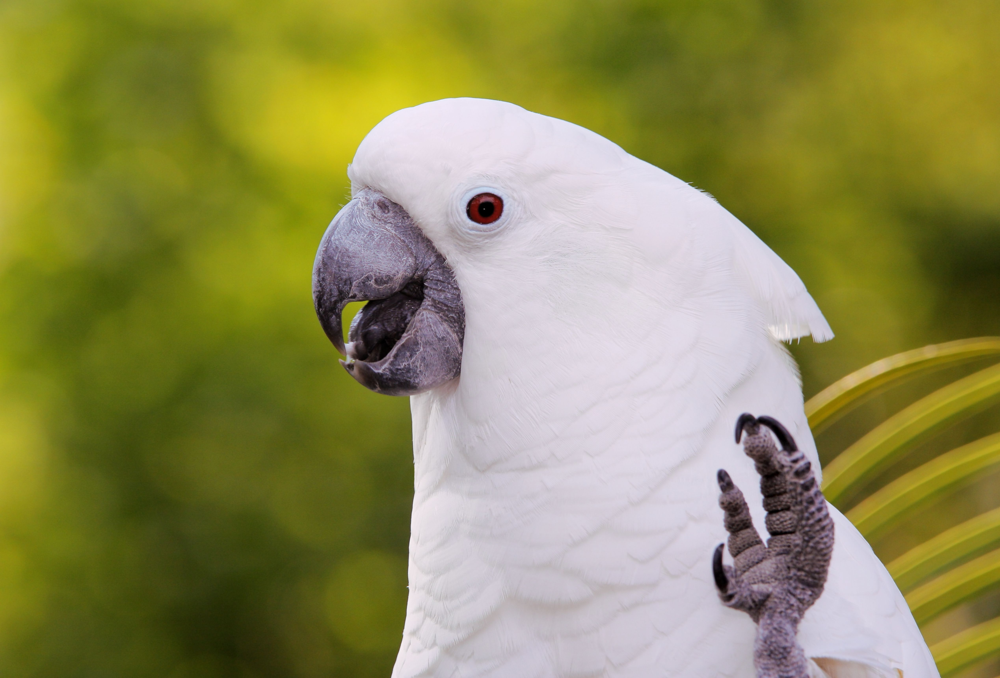Likes
- Talking and mimicking sounds
- Exploring colorful toys and puzzles
- Feasting on fresh fruit and nuts
Luna Kitten

Luna, an irresistibly cute and playful kitten with a coat that's a charming mix of gray and white, reminiscent of a soft winter's day. Luna is a 7-month-old kitten who fills the house with joy and endless energy.
During the day, Luna can be found chasing after feather toys, leaping around the room, and exploring every nook and cranny. Her playful antics and boundless curiosity bring smiles to the faces of everyone in the family.
Photo Gallery
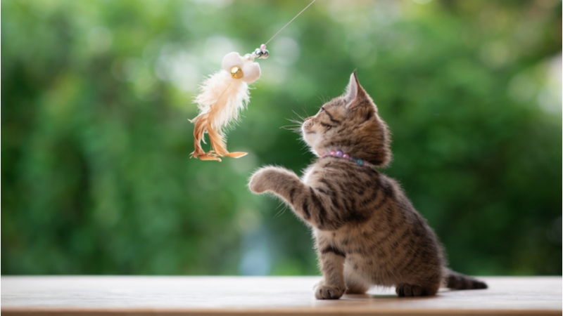 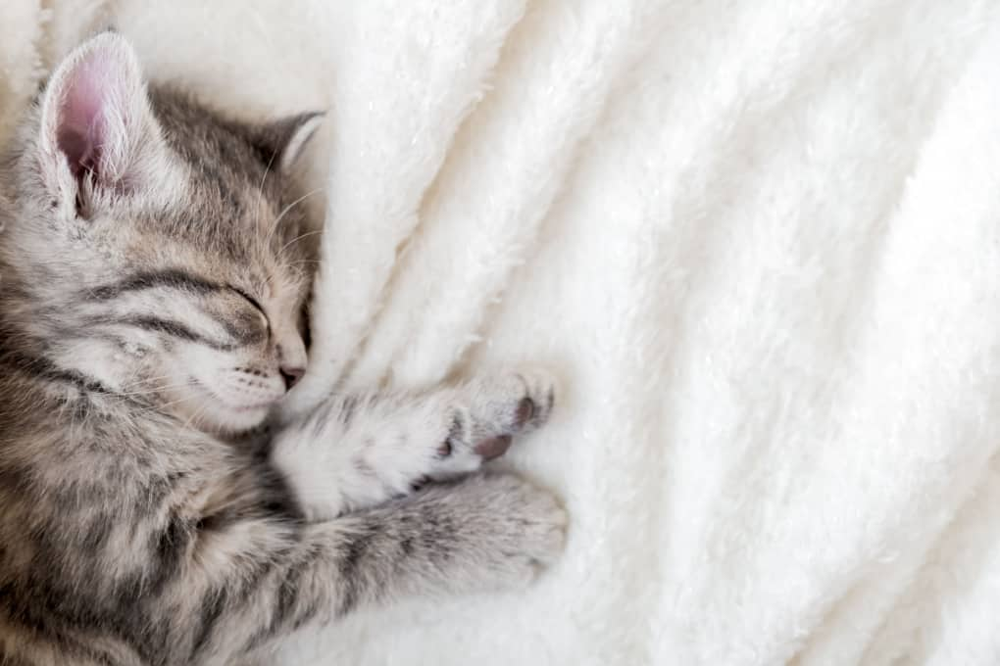 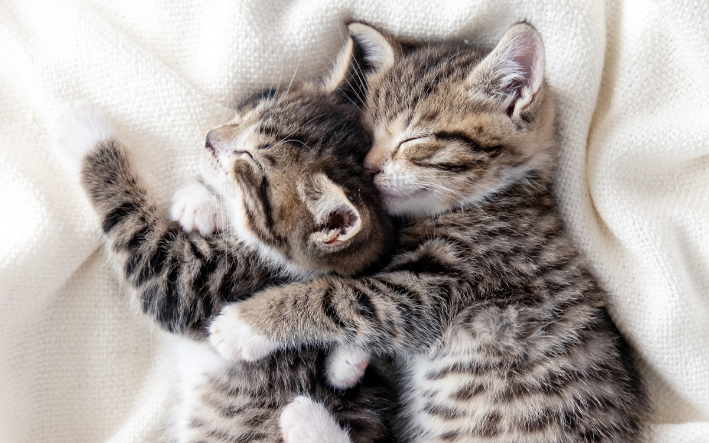Likes
- Chasing feather toys
- Napping in cozy spots
- Cuddling with human
Todd Turtle
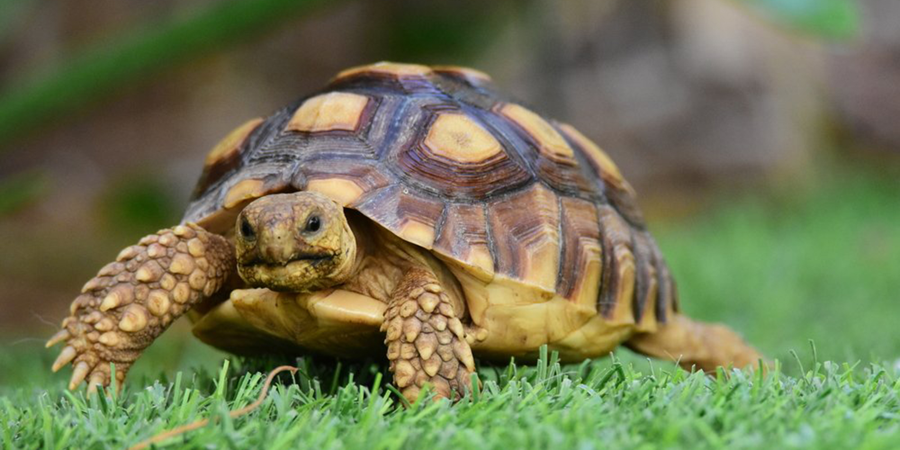Todd, an endearing pet turtle with a sturdy shell and a thoughtful demeanor. Todd is a 5-year-old pet turtle who may move at his own pace but brings a sense of calm and coziness to the household.
During the day, Todd can be found leisurely swimming in his tank or sunbathing on a cozy spot. He has a particular fondness for fresh vegetables and fruits, which he enjoys with great delight.
Photo Gallery
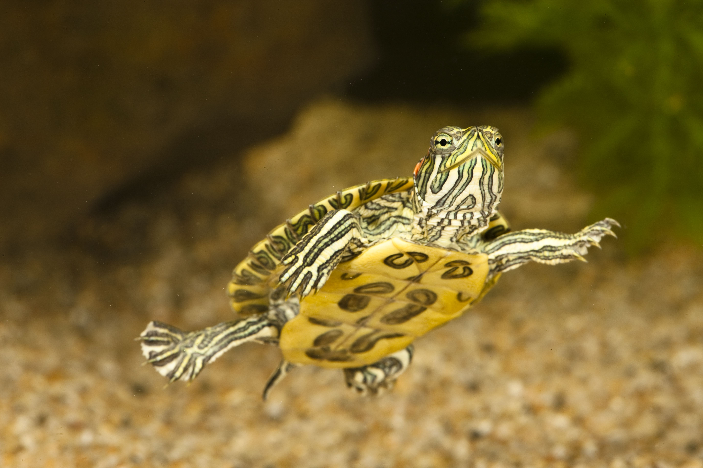 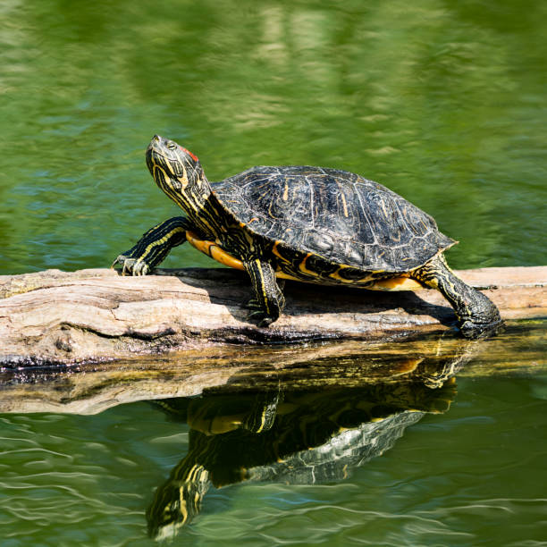 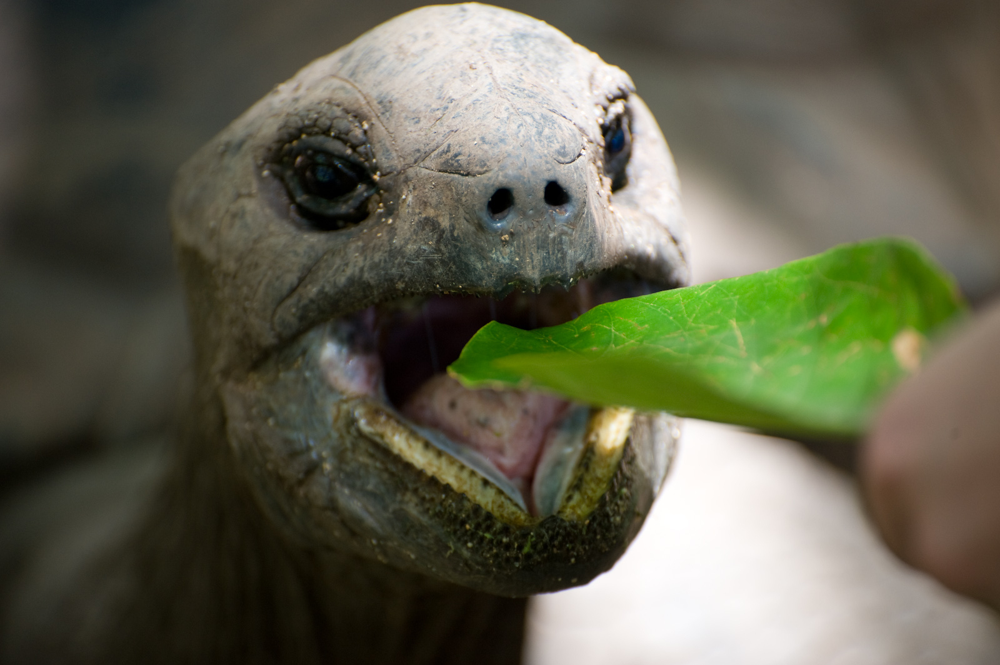Likes
- Relaxing while swimming in his tank
- Basking in the warmth of the sun
- Delighting in fresh vegetables and fruits